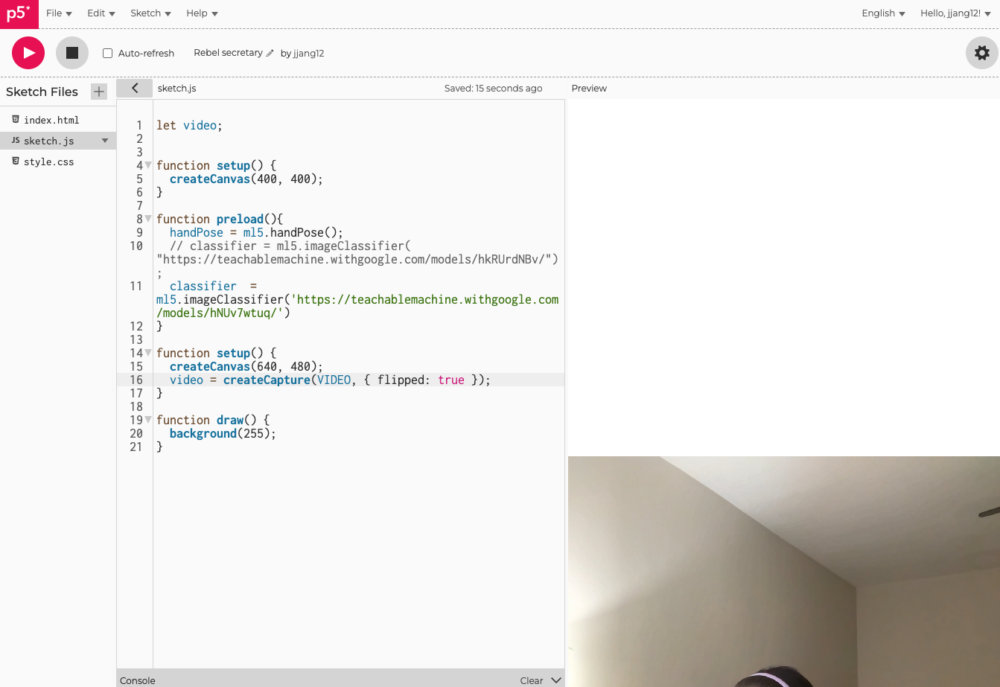

Find Your Interface (Due: Nov 8)
Step 0. Idea Sketch: Christmas Letter
The goal is to create an interface for making personalized Christmas letters using emojis. Objects are trained using Teachable Machine, and depending on the object, a corresponding emoji will appear. The trigger for displaying the image is the pinch gesture of the user's hand. When a user pinches their thumb and index finger, the emoji appears at the pinch point.

Step 1. Connect Teachable Machine and Set up the Camera
I connected the data trained with Teachable Machine and set up the camera below the empty canvas.
Step 2. Errors While Adding Dots to Both Fingers
To recognize the position of the fingers on the screen, I attempted to draw circles on the fingers. During this process, I encountered the error: Cannot read properties of undefined (reading 'index_finger_tip'). Upon checking the mentioned line (line 29), I confirmed that the issue wasn’t due to a typo. The error message suggested there was a problem with finger or hand. I reviewed the logic to ensure that the hand was being recognized and that the dots appeared accordingly. I referred back to the handPose example from the ml5 website. While the dots now appeared, they remained on the canvas, leaving trails instead of moving with the hand. To resolve this, I moved background(250) from the setup function to the draw function, ensuring the background was redrawn continuously. Additionally, I wanted to hide the camera feed. When I removed the line image(video, 0, 0, width, height); from the ml5 example file, it caused an issue.
Step 3. Add Dots to Both Fingers
Using the console, I identified the index and thumb tip points of the fingers. I set the condition to check if at least one hand was detected and ensured that if multiple hands were detected, only the first hand would be processed. For this, I used the following code:if (hands.length > 0) {let hand = hands[0]; let keypoints = hand.keypoints;
Step 4. Add Dots to Visualize Finger Positions
I encountered an error related to `tip`. I had written `thumb.tip` instead of `thumb_tip`. The error message pointed me to line 41, making it easy to find and fix the issue.
Step 5. Connect with Teachable Machine
Building on what I learned in class, I connected the interface to Teachable Machine, allowing different emojis to appear for specific objects. For example, holding water displays a beer emoji, and holding coffee displays a coffee emoji. However, when pinching fingers together, the emoji kept appearing repeatedly.
Step 6. Fix the Issue of Repeated Emoji Appearance
To resolve the issue of emojis repeatedly appearing when pinching fingers together (as mentioned in Step 5), I added a function to check whether the emoji had already been drawn on the screen. Using an if statement, I ensured that the interface would check whether the emoji was drawn after the pinch gesture was performed.
Finish Your Interface (Due: Nov 8)
Step0. Idea Sketch
In last week's assignment, I used Teachable Machine to recognize real-world objects and created a Christmas card where the emoji would change based on the object detected. However, I found that Teachable Machine often had issues with object recognition. Therefore, I decided to adjust the idea slightly. Instead of relying on object recognition, I kept the Christmas tree background unchanged. Now, when making a pinch gesture with the left hand, a snow image appears, and when making a pinch gesture with the right hand, a star image appears.

Step 1. Load canvas and bgImage
The error message "width is not defined" appeared, so I started by checking for typos. I realized that the problem was with "bgImage," which was incorrectly written as "bgimage." What's funny is that the error refers to "width," but focusing only on that won't help. The issue is related but always seems to be somewhere else.
Step 2. Importing handPose Gestures
I imported the handPose gesture code from the ml5 handPose website. The camera overlayed the image, so I decided to hide the camera temporarily.

Step 3. Finding the Hand Position
Using the console, I identified the hand landmarks. I needed the tips of the first and second fingers, which turned out to be `hand.index_finger_tip` and `hand.thumb_tip`. Initially, I added `console.log(hand);` before `let hand = hands[i]`, but it caused an error. I had mistakenly thought I defined `hand` as `let hand = []`. Since I had defined `hands` earlier, the log statement needed to come after `let hand = hands[i];` for it to work.

Step 4. Adding Dots to Visualize Finger Positions
I encountered an error related to `tip`. I had written `thumb.tip` instead of `thumb_tip`. The error message pointed me to line 41, making it easy to find and fix the issue.

Step 5. DrawImage Error
I received an error saying "drawImage is not defined." I checked line 71 but found no issues. Upon reviewing the `drawImage`-related function code, I discovered that I had written it as `drawEmoji`. `Image` refers to the data being drawn on the canvas when I pinch my fingers, while `Emoji` is the array function that collects the images (including coordinates, triggers, and other data). To avoid confusion, I felt the need to rename `Emoji` to `Image` for consistency. Using uniform terminology makes coding easier and faster.
Step 6. Loading Images Using Pinch Gestures with Left and Right Hands
When making a pinch gesture with the left hand, a Snow image appears, and when making a pinch gesture with the right hand, a Star image appears. To differentiate between the left and right hands, I set a trigger based on whether the index finger is in front of the thumb or vice versa when performing the pinch gesture. If the thumb is in front, it is recognized as the right hand; if the index finger is in front, it is recognized as the left hand. In the initial if statement, when the distance is less than or equal to 20 and no emoji is displayed on the screen, an image appears at the point where the thumb and index finger touch. Here, !emojiDisplayed is important. Without it, multiple images would appear continuously, causing an error (I confirmed the error but didn’t capture a screenshot). The same logic was applied for the right hand. When the distance is greater than 20, I used false to ensure no new images are drawn. Finally, I wrote the last piece of code to ensure that multiple images could continue to appear on the screen without disappearing.

Step 7. Background Size Issue When Performing Pinch Gesture
Although the images appear as intended when I make a pinch gesture, an issue arose where the background size would also increase.